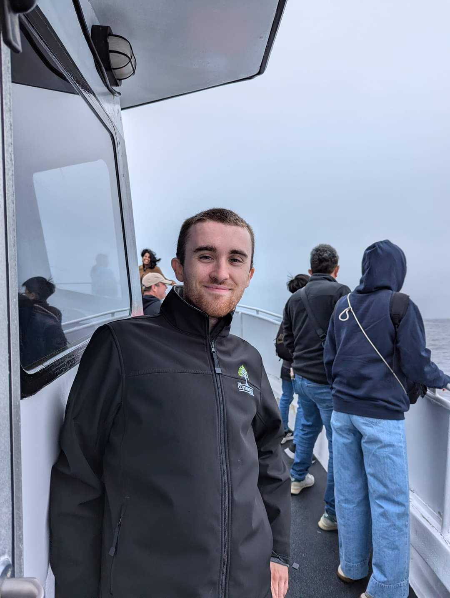

About me
Discussing my professional background...
I'm a cum laude computer science graduate from Oregon State University. I internshipped at KTM Research
and Climate Steps, where I learned machine learning, database maintainence and design, and web development.
While working at Wujo Transpac, I found I really enjoyed being able to use my interpersonal skills
in addition to my technical skills to help customers resolve their technical issues.
I am currently a swim instructor and systems administrator. As an instructor, I teach children, parents,
and special-needs students everything they need to know to be safe and swim effectively in the water.
As a server administrator, I ensure uptime, resolve any issues that arrise, and deploy feature
enhancements based on user needs.
About myself, my hobbies, and my interests...
For hobbies, I love the outdoors, cooking, tabletop games like Magic: the Gathering, and being active in my community. I'm a member of the
Roseville Urban Forest Foundation (RUFF); on weekends, I help plant and protect trees in Roseville. Additionally, I volunteer at "find out farms"
(lowercase spelling intentional) in Sacramento, where I help maintain a community garden. I also volunteer with the Citizens Climate Lobby (CCL), a bi-partisan
group that works with members of congress to pass legislation which protects communities and the environment while reducing carbon emissions.
Fun facts about myself are that I have ventured into the heart of the Mexican Jungle to aid biologists' research; I was responsible for
presenting survey data before the California Board of Forestry; I was a caregiver and was trusted to provide care to those in their final days;
I am open-water certified and have scuba dived in Mexico for research and the Bahamas for fun; and, I have traveled to France, Germany, and Austria.